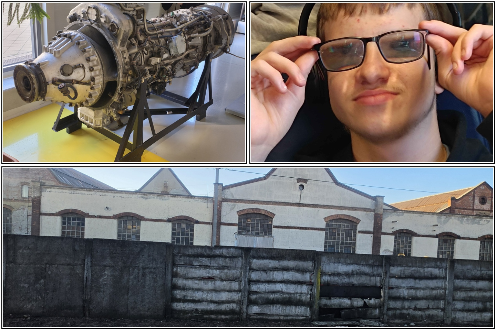

Én Bukó Péter vagyok a Miskolci Görög Katolikus Általános Iskolábol jöttem. 15 éves vagyok mindjárt 16 A hobiaim között van a gépezés, vm ek futatása, videó játékokal való játék, . Meg a biciklizés.
Azért választotam a kandót mert érdekel az informatika.
